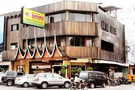
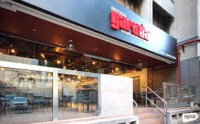
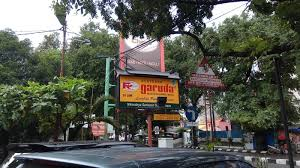

Cabang
Restoran Garuda

Kota Jakarta

Kota Depok

Kota Bekasi

Tengtang Kami
Restoran Garuda merupakan perusahaan swasta yang terbentuk perorangan. Didirikan pada tanggal 9 oktober 1976 berlokasi di jalan Pemuda No. 20 Medan, yang kemudian ditetapkan sebagai Rumah Makan Garuda I sekaligus sebagai kantor pusat dan administrasinya. Pada awalnya restoran ini hanya berupa rumah makan yang diberi nama "Rumah Makan dan Buffet Garuda".
Rumah Makan Garuda bergerak dibidang mengelolah makanan yang spesifik yaitu Minang dan Melayu, dimana alasan untuk mendirikan rumah makan ini adalah merupakan hasil survey bahwa masih kurangnya sarana rumah makan terutama yang menyediakan makanan spesifik Minang dan Melayu dikota Medan. Dengan melihat kesempatan inilah, maka didirikanlah Rumah Makan Garuda pada tahun 1976. Bidang usaha ini terus berkembang hingga saat ini, dimana terdapat beberapa usaha sejenis yang dikelola oleh pihak lain.
Restoran Garuda
Restoran Garuda telah berdiri sejak 1976 hingga saat ini. Kami bergerak dibidang mengelolah makanan yang spesifik yaitu Minang dan Melayu


Senin 9:00 - 20:00
Selasa 9:00 - 20:00
Rabu 9:00 - 20:00
Kamis 9:00 - 20:00
Jum'at 9:00 - 20:00
Sabtu 9:00 - 20:00
Minggu 9:00 - 20:00
Dapatkan informasi dan promo terbaru dari kami.